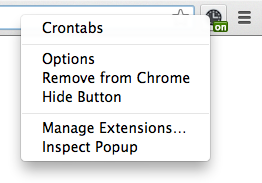
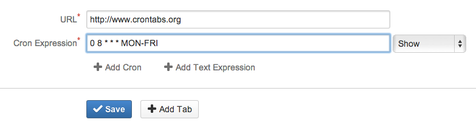
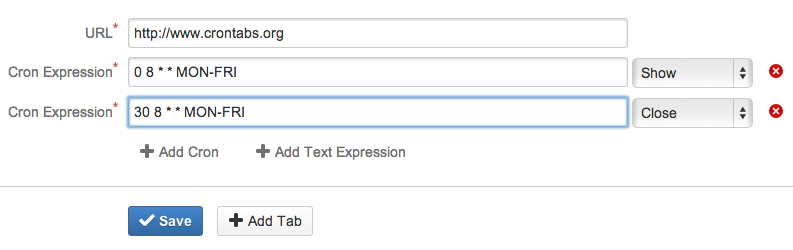
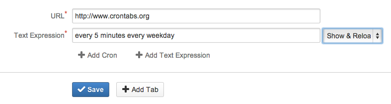

Crontabs
Easy Tab Scheduling for Chrome
Setting up Crontabs
After installing crontabs, right-click on the crontabs icon and choose Options.
Scheduling with Cron Expressions
With crontabs you can easily schedule an operation on a tab with a cron expression. By default there will be an empty Cron Expression for each Tab.
Open your wallboard at 8.00am on Weekdays
Open a tab at 8.00am and close it at 8.30am.
Cycle between two tabs on weekdays

Scheduling with Text Expressions
Crontabs is powered by laterjs which also supports a textual scheduling format with composite schedules.
Click Add Text Expression to add one to your tab.
Show and Reload a tab every 5 minutes on weekdays
Supported Operations
- Show (Activates or Creates a tab)
- Close (Closes a tab if it exists)
- Reload (Reloads a tab if it exists)
- Show and Reload (Activates a tab which exists and Reloads it, else creates and Activates it)
Source
Crontabs is open source. Feel free to check it out at http://bitbucket.org/edave/crontabs. Pull requests welcome.
License
Crontabs is licensed under the Apache 2.0 License.